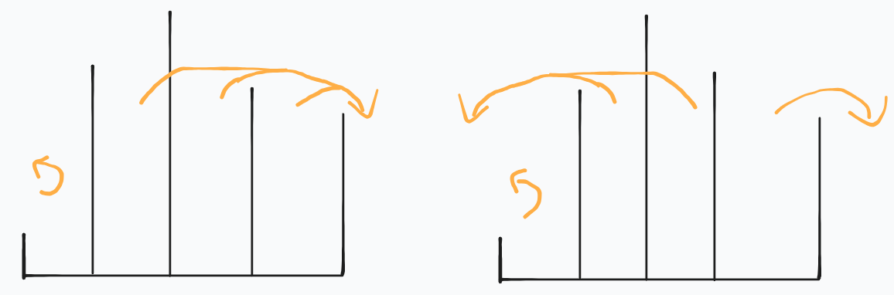
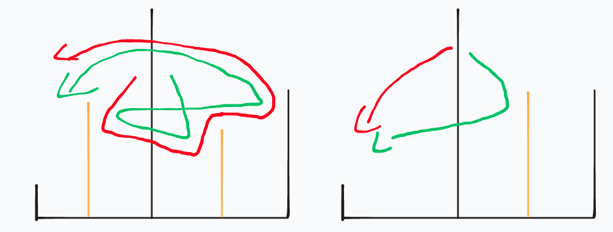
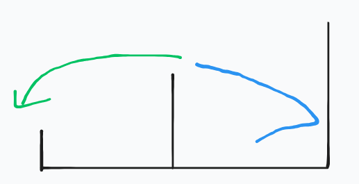

link T2です
有 n 个黑色石头排成一行，第 i 个石头上整数 ai 是一个排列。
操作过程：
q 次询问，每次给出 pi,ki，问有多少种第 1 步的选择，使得第 ki 步涂白的石头编号是 pi。
2≤n≤105,1≤q≤105,1≤pj,kj≤n。
显然的，可以发现石头的扩展在任一时刻是一个区间。
离线貌似只能做到 O(n2)，那么考虑在线。（话说为什么会先想到离线啊喂）
仍然不考虑 corner case。
对于一个第 k 步涂白的 p，显然的，其所有第 1 步的选择 x 一定在 [p−k+1,p+k−1] 的区间内。
对于在 p 左边的 x，显然会有 [p−k+1,p] 被选完。对于在 p 右边的 x，显然会有 [p,p+k−1] 被选完。
并且这里的“选完”是严格的，就是不允许其他不应该选的点选。
我们只考虑 x 在 p 的右边。
这里我们来讨论几种情况：
-
如果 ap+k<ap，这种情况中的 x 只会向 ap+k 冲去，会选到 ap+k，显然是不可以的，答案为 0。排除所有这种情况。
-
令点 pos 为 [p+1,p+k−1] 中的最大值的位置。
如果 apos>ap+k ¹，那么对于所有的 x∈[p+1,pos−1]∪[pos+1,p+k−1]，都会过不去 apos。
因此这种情况只有 apos 可能可以作为 x。
又显然，如果左边的最大值或者右边的最大值 >ap+k，那么无论如何都会出现过不去/冲出 ap+k 的情况。

令左边的最大值 =l ，右边的最大值 =r，此时 l,r<ap+k ²。
也就是 p+1∼p+k−1 中只有 apos>ap+k。
由于 apos 需要必须访问右边，那么如果右边的某一位置将 apos 反弹，并且左边所有值都要比这个位置要低，这也是失败的。

因此应满足 l>r ³，这样才能保证会让 ap+k 卡住。
-
如果 apos<ap+k，显然的，在 pos 左侧的所有 x 会过不去 pos，不考虑。
那么对 pos 右侧的所有 x 而言，pos 较矮，会遍历完右侧后从 pos 溢出，可以全部统计。

单独考虑 pos 这个位置，同样需要且只需要保证 l>r 即可。
这样就统计完了一边，另一边也是一样操作就好了。
1
2
3
4
5
6
7
8
9
10
11
12
13
14
15
16
17
18
19
20
21
22
23
24
25
26
27
28
29
30
31
32
33
34
35
36
37
38
39
40
41
42
43
44
45
46
47
48
49
50
51
52
53
54
55
56
57
58
59
60
61
62
63
64
65
66
67
68
69
70
71
72
73
74
75
76
77
78
79
80
81
| int n,q;
int a[maxn];
void input(){
n=read();q=read();
for(int i=1;i<=n;++i){
a[i]=read();
}
a[0]=a[n+1]=1e9;
}
PII jumpmx[maxn][maxlog];
void calc_jump(){
for(int j=0;j<maxlog;++j){
for(int i=1;i<=n;++i){
if(j==0) jumpmx[i][j]={a[i],i};
else{
if(i+(1<<(j-1))>n) jumpmx[i][j]=jumpmx[i][j-1];
else jumpmx[i][j]=max(jumpmx[i][j-1],jumpmx[i+(1<<(j-1))][j-1]);
}
}
}
}
PII rmqmx(int l,int r){
if(l>r) return {-inf,-1e9};
int len=r-l+1,highbit=hb[len];
return max(jumpmx[l][highbit],jumpmx[r-(1<<highbit)+1][highbit]);
}
PII rmqmn(int l,int r){
if(l>r) return {inf,1e9};
int len=r-l+1,highbit=hb[len];
return min(jumpmn[l][highbit],jumpmn[r-(1<<highbit)+1][highbit]);
}
ll singler(int p,int k){
int l=p,r=p+k-1,wall=r+1;
if(r>n) return 0;
if(a[p]>a[wall]){
return 0;
}
auto tmp=rmqmx(l,r);
ll mx=tmp.first; int mxp=tmp.second;
ll lmx=rmqmx(l,mxp-1).first,rmx=rmqmx(mxp+1,r).first;
if(mx>a[wall]){
ll omx=max(lmx,rmx);
if(omx>a[wall]) return 0;
if(lmx>rmx) return 1;
return 0;
}
else{
ll res=r-mxp;
if(lmx>rmx) return res+1;
return res;
}
}
void ask(){
for(int i=1;i<=q;++i){
int p=read(),k=read();
ll ans=0;
if(k==1) ans=1;
else{
if(p!=1) ans+=singlel(p,k);
if(p!=n) ans+=singler(p,k);
}
printf("%lld\n",ans);
}
}
int main(){
calc_highbit();
input();
calc_jump();
ask();
return 0;
}
|
sub